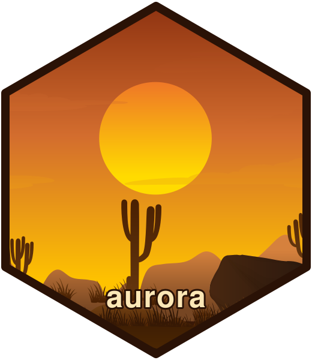

aurora: Build Stateless Web Apps in R with plumber2
Source:R/aurora-package.R
aurora-package.RdA scaffolding and deployment toolkit for building stateless web applications in R on top of 'plumber2'. The UI is authored with 'bslib' and compiled to a static HTML asset at build time, while 'plumber2' serves the assets and exposes JSON API routes. Provides functions to scaffold app skeletons, run them locally, and generate Dockerfiles and images suitable for 'ShinyProxy' or plain Docker.
Author
Maintainer: Andre Leite leite@castlab.org
Authors:
Andre Leite leite@castlab.org
Marcos Wasilew marcos.wasilew@gmail.com
Hugo Vasconcelos hugo.vasconcelos@ufpe.br
Carlos Amorin carlos.agaf@ufpe.br
Diogo Bezerra diogo.bezerra@ufpe.br
Júlia Nascimento Barreto juliabarreto@gd.seplag.pe.gov.br